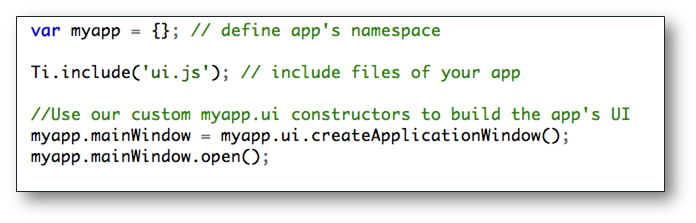
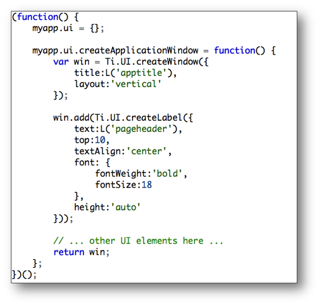
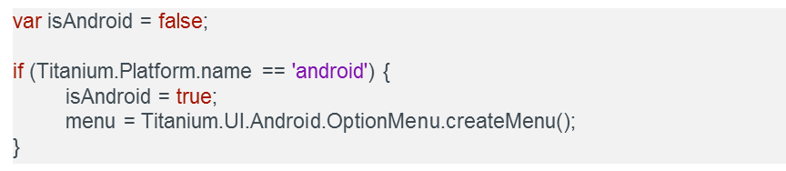
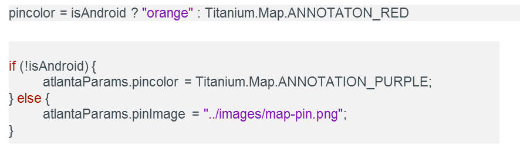
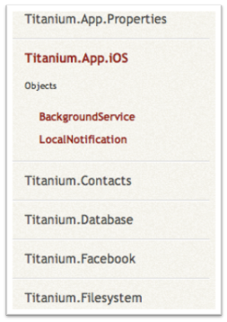
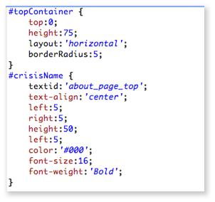

Cross-Platform JavaScript Applications
Building Native Mobile Apps With Appcelerator Titanium
Module time: 1:30(60 mins teach, 30 mins lab)
This module will cover best practices for creating cross-platform mobile apps
AGENDA
- Building JavaScript applications for Titanium
- Coping with (and taking advantage of) different platforms
- Cross-platform techniques in action
- Introducing TiBountyHunter (Lab)
How to structure JS code in large application
Coping with platform differences, but taking advantage of those differences
We’ll introduce our lab and sample application and lay the foundation for the rest of that app.
Large JavaScript Applications
For many developers, Titanium Mobile may be their first large JavaScript app
Procedural JavaScript (like random Ajax or UI on a web page) won’t cut it
Need to adhere to some baseline best practices:
- Protect the global scope
- Be modular (mix of OO and module pattern)
- Need to strive to keep code DRY
Ti projects go beyond DOM manipulation on a web page. Need strategies for organizing and writing JS code.
You have to write well-formed, strictly syntactically correct code to compile without errors on both platforms.
Protecting the global scope means being careful with global variables and scope.
Being
modular means creating JavaScript business objects when it makes sense (for actual data model objects, for instance), and modules when that makes sense (data or network access)
DRY means Don’t Repeat Yourself. Need to reuse code as much as possible for the sake of maintainability
Writing Rich Client Applications
Similar in spirit to single-page web applications
Rich Clients share characteristics:
- Sophisticated UI controls
- Client-side data models
- Local storage and focused remote data access
Component Oriented, Event Driven (more later)
Titanium Mobile applications have a lot in common with rich client browser apps written in Flex or ExtJS
Native Cocoa Touch and Android controls
Business-related data objects on the client side
Remote data – web API, just data & no presentation logic
Component oriented – UI loosely coupled from app logic
The Titanium JavaScript Environment
V8/Rhino or JavaScriptCore interpreters
Code runs in an "execution context", similar to the single JS thread in the browser (more soon)
app.js defines the root application context
Most of the time, one context is okay
Structuring JavaScript Code
Ti.include()
CommonJS require()
Windows with URL properties
One file per window is not recommended*
Usage Demos
Ti.include() - code injected into current execution context
CommonJS – set up isolated scope and return only published properties and methods
All three JavaScript code inclusion methods are demonstrated in the Kitchen Sink.
One file per window is only recommended when a “clean slate” for execution is desired
Ti.include() Demo:
- Create new project
- Launch and run in simulator
- Open app.js
- Use Ti.include statement to include file
(Android: absolute paths / iOS: relative to current directory based on context)
- Create that include file—add log statement
- Launch, show log statement in console
CommonJS Demo:
- In app.js, enter require(‘logger’)
- Create logger.js file:exports.info = function(_str) { Ti.API.info(_str); }
- In app.js, enter logger.info(‘logged with common js’);
- Launch and show console
Don't extend Titanium proxies
General rule: don't add properties or methods to Titanium objects (Ti.App, Ti.API, Ti.UI.*)
Critical: don't use "get/set" in methods you add
You can't override built-in methods and properties
(But, it's usually okay to add a property or two)
Titanium proxies represent native objects. E.g. Ti.UI.Button has a native button counterpart
Adding properties and methods could break the link between the JavaScript objects and their native equivalents
Can’t use words get or set in method names – those are reserved “magic” on iOS and Titanium will ignore your code and try to call those methods on the native proxy instead
You can’t override (replace) any of the built in methods or properties
Despite all that, it’s usually okay to add one or two properties, like adding a property to store the primary key of a database record in a table row or map annotation.
Namespaces
Discrete "containers" for variables & other identifiers
Prevents collisions
Titanium namespaces:
Titanium.UI, Titanium.App, Titanium.API, etc.
Ti = Titanium
Define custom namespaces in your app
Prevent name conflicts
Access variables across scopes
Don’t pollute the global scope
So what does a sane app look like?
app.js is your bootstrap file
Defines app's name space
Includes app's files
Creates and opens the first UI component

Not much logic in app.js – just bootstraps your app
So what does a sane app look like?
Additional files to implement app functionality
Self-calling functions define scope
Demo

Not much logic in app.js – just bootstraps your app
Cross-platform !== "Write Once, Run Everywhere"
Titanium is "Write Once, Adapt Everywhere"
We should be building "Best of Breed" apps
Non-visual code and much UI code can be 100% portable
Accept and embrace platform differences
The Titanium philosophy of cross-platform is not write once, run everywhere. In practice, that usually turns out to be a lie anyway, as even platforms as mature as Flash have proven.
Titanium provides the tools to reuse 60-90% of code across platforms, depending on the UI needed – write once, adapt anywhere is the mantra.
Titanium is intended to build best of breed applications – on iOS, that mean using Cocoa UI components and local notifications, or registering intents or controlling the hardware back button on Android
The best cross-platform mobile apps will focus on delivering the right native app on the platform, while sharing as much code as possible
Cross-platform differences, for that reason, should be expected and welcomed.
Android: intents, background services, hardware menu button
iOS: routes in maps, pre-built animations, Cocoa UI
Platform-specific APIs are implemented in a platform-specific namespace
special api sections, platform only supported logic, etc
resolutions, services, intents/actions.
Because you have these diffs, the API provided is not always supported in all platforms, be aware of this.
Developing for Multiple Platforms
Titanium API provides a platform variable that can be used with if statements
Platform-specific resources:
- Code files
- Images, text, and any other file type
Per-platform styles with JSS
The core of customization would be the platform name variable
How ever using Javascript you can implement it in a number of ways
Simple if statements being the simplest form
You can read the variable once and use it later for if statements
You would also be able to implement functions that return your variable so that it is easier to use in your code
Custom folders, containing javascript code/images and icons
Titanium API has special sections for each platform to be able to use the strengths from them
actions, intents, UI transitions etc
JSS new in SDK 1.5.0 can be used favorably to implement differences in platforms
Tiapp.xml provides special config options per platform
Kitchen Sink cross-platform examples of branching logic, platform specific resources and config.
Use the platform name to branch:

Best to store in a single variable:

Define local variable to minimize trips “across the bridge”
(going from JS to Native back to JS)

Files in these directories supersede those in Resources
As the build process runs it will compose files from these folders so that if a file is here it will be exchanged so that the correct one is used in the root project instead.
Resolution-Specific Resources

Retina / non-retina on iOS
Resolution, orientation, and aspect ratio versions on Android
Refer by the base name on all and the correct version will be used.
Platform-specific functionality is broken out into sub-namespaces where appropriate

Separate name spaces for platform-specific functionality
JSS can be segregated per-platform:
app.js
app.android.jss
app.android.high.jss
app.android.medium.jss
app.android.low.jss
app.iphone.jss

http://wiki.appcelerator.org/display/guides/User+Interface+Fundamentals
JSS files
http://wiki.appcelerator.org/display/guides/Designing+the+User+Interface
Icons and splash screens

Appicon.png is your app’s icon
Default.png is the splash screen
Must be in platform-specific folders
Can set resolution-specific versions by using the appropriate folders
Internationalization
Platform-specific functionality is broken out into sub-namespaces where appropriate

Project/i18n/
lang/strings.xml
lang = language name per ISO 639-1 standard
componentrefers to most any of the UI elements: buttons, views, etc.
Use titleid instead of title property
app.xml defines the internationalized version of your app’s name
Q&A

Before we move into the lab, what questions do you have?
Introducing TiBountyHunter
Demo app from Head First Series (good book)
863 lines of low level, single platform Objective-C
We will write a more complete, cross-platform app in less than 50% of the code
TiBountyHunter is based on iBountyHunter from Head First iPhone Development, which is a solid book.
In addition to the Objective C code, there are also interface builder files which contain the bulk of the UI layout, so it’s closer to 30% of the code.
Our app will have more features, and run cross platform
Lab Goals
Create the foundation for a localizable, cross-platform application
Set up JavaScript code framework
Become familiar with foundational JavaScript coding techniques
iBountyHunter demo, Lab Demo, and Lab URL
Demo original iBountyHunter – code at:
http://examples.oreilly.com/9780596803551/Chapter_9.zip
Demo TiBountyHunter as of end of this lab
- Two tabs
- Separate window titles
- Compile and run on both platforms
Lab Exercise

Solution Walkthrough

Code Walkthrough - TiBH215
app.js
- namespace definition
- include statements
ui.js- explain basic UI elements
i18n